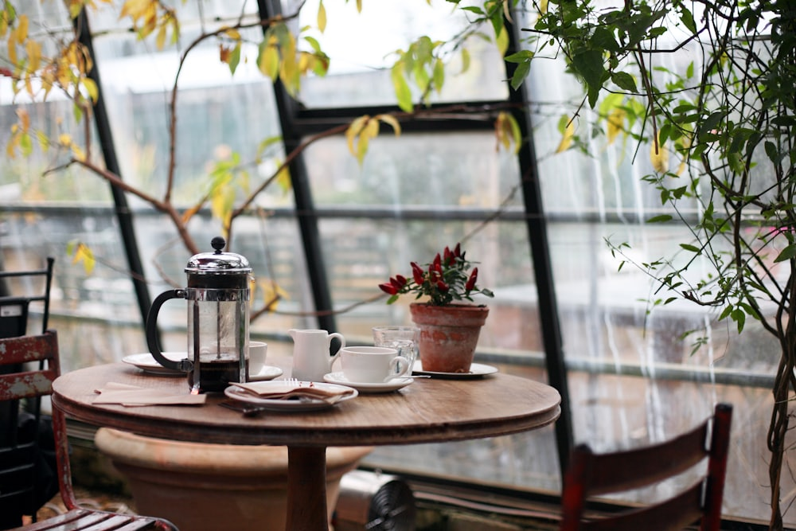
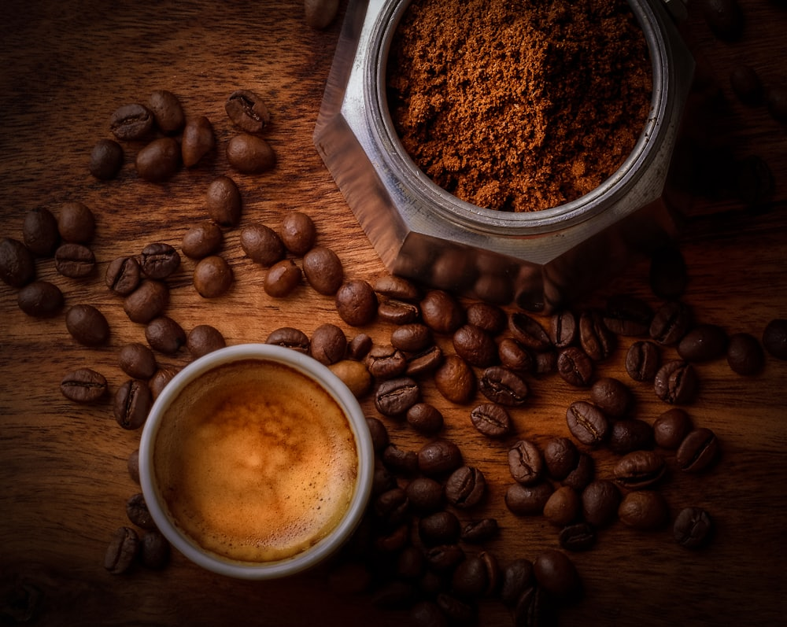
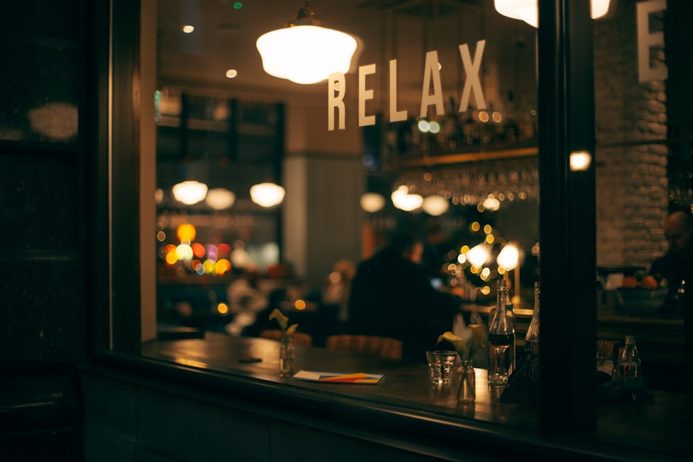
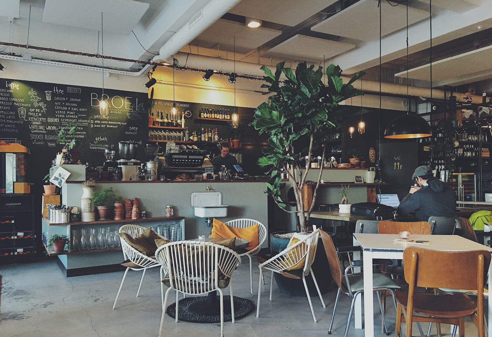
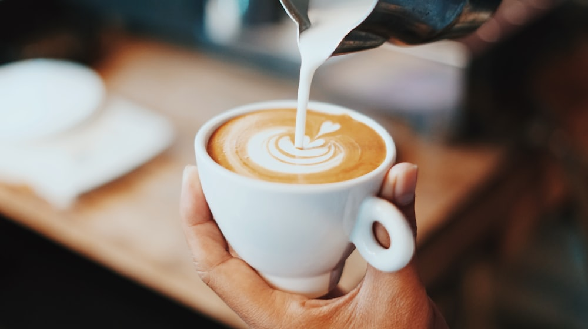

Ñuñoa · Frente a Plaza Sucre desde 2001
Un rincón del mundo,
en Plaza Sucre.
Cafetería de barrio con más de 20 años de historia, decorada con antigüedades y con el sabor de siempre: café, repostería casera y buena conversación.

Quiénes somos
Más de 20 años
frente a la plaza.
Café Del Mundo abrió sus puertas en 2001, justo frente a la Plaza Sucre — uno de los rincones que le da identidad a este barrio de Ñuñoa. Con 377 opiniones en Google, es parte de la memoria del sector.
El local se distingue por su decoración con antigüedades, un detalle que sus propios clientes destacan: un espacio con historia, no una cafetería de paso.


Lo que dicen de nosotros
"Diseño muy lindo
con antigüedades."
Así lo describió Andrea Momo, Local Guide de Google con más de 280 reseñas, después de visitarnos. Cada rincón del local tiene una pieza con historia — parte de lo que hace que Café Del Mundo se sienta distinto a cualquier otra cafetería de la zona.
Un vistazo
El ambiente de siempre.


La carta
Café y algo casero.
Lo que dicen
4.1
377 opiniones en Google Maps
"Muy bonito lugar, buena ambientación y precios accesibles. Comimos un tiramisú de buena porción y fresco."
"Muy lindo el lugar, atención normal, diseño muy lindo con antigüedades."
Visítanos
Av. Sucre 1457.
Av. Sucre 1457
Ñuñoa, Región Metropolitana (frente a Plaza Sucre)
Todos los días, 11:00 a.m.–8:30 p.m.